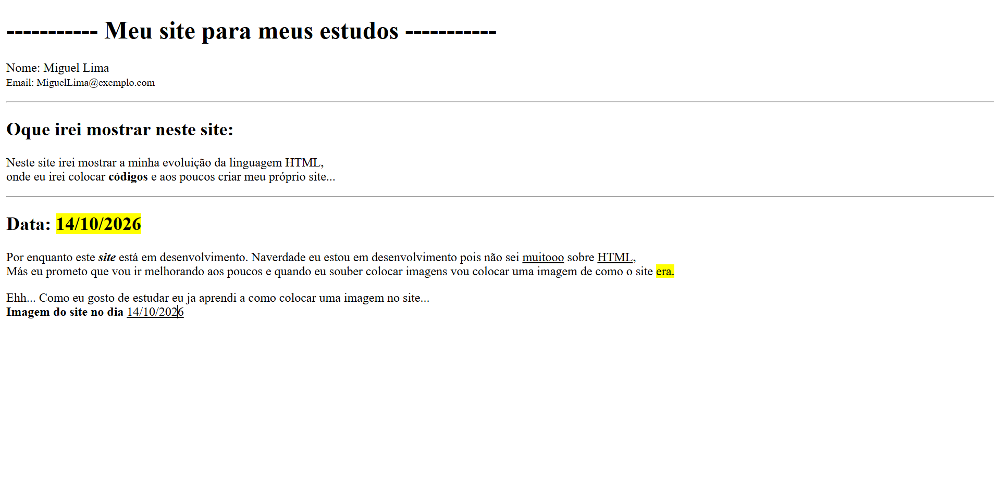

Neste site irei mostrar a minha evoluição da linguagem HTML,
onde eu irei colocar códigos e aos poucos criar meu próprio site...
Por enquanto este site está em desenvolvimento. Naverdade eu estou em desenvolvimento pois não sei muitooo sobre HTML,Más eu prometo que vou ir melhorando aos poucos e quando eu souber colocar imagens vou colocar uma imagem de como o site era.
Ehh... Como eu gosto de estudar eu ja aprendi a como colocar uma imagem no site...
Imagem do site no dia 14/10/2026:

Beleza por hoje aprendi algumas tags bem importantes e divertidas! Uma delas foi a de negrito e varias outras... Se eu contar com certeza vai dar mais de 20! Uma coisa que tenho que aprender também é como puxar essas letras um pouquinho mais pro centro, pois está muito no canto e meio estranho...
Ehhhh, vamos dizer que aprendi a centralizar o texto! ainda bem pois estava meio estranho...
Bom podemos dizer que eu acho que foi tudo por hoje, amanhã eu estudo mais... Tchau para todos!
Salve! Vocês estão bem? Bom hoje eu aprendi a como colocar links, para eu testar ou mostrar isso para vocês como se fosse algo muito impressionante eu irei colocar esse link.
Bom já que vocês ja clicaram vamos continuar, eu também aprendi a como usar um link para entrar em arquivos interno, ou seja, do meu próprio VS CODE. Como por exemplo esse link para entrar no meu site de links.
Bom foi tudo isso que aprendi hoje, por enquanto... Amanhã eu falo oque aprendi, Tchau!